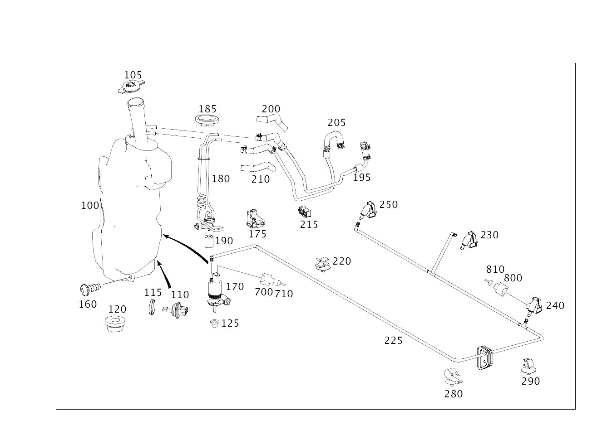

| № | Артикул | Название | Кол. | Примечание | Ограничение |
|---|---|---|---|---|---|
| 100 | A 251 869 10 20 | Бак (CONTAINER) | 1 | ОМЫВАТЕЛЬ СТЕКЛА [409] ПРИ МОНТАЖЕ ПОДОГНАТЬ ПО МЕСТУ | -600 |
| 100 | A 251 869 21 20 | Бачок (LIQUID RESERVOIR) | 1 | ОМЫВАТЕЛЬ СТЕКЛА [409] ПРИ МОНТАЖЕ ПОДОГНАТЬ ПО МЕСТУ | -600 |
| 100 | A 251 869 10 20 | Бак (CONTAINER) | 1 | ОМЫВАТЕЛЬ СТЕКЛА [409] ПРИ МОНТАЖЕ ПОДОГНАТЬ ПО МЕСТУ | 600 |
| 100 | A 251 869 21 20 | Бачок (LIQUID RESERVOIR) | 1 | ОМЫВАТЕЛЬ СТЕКЛА [409] ПРИ МОНТАЖЕ ПОДОГНАТЬ ПО МЕСТУ | 600 |
| 100 | A 251 869 12 20 | Бачок | 1 | СТЕКЛООМЫВАТЕЛЬ С ПОДОГРЕВОМ И ФАРООЧИСТИТЕЛЬ | 875+600/875 |
| 100 | A 251 869 22 20 | Бачок (LIQUID RESERVOIR) | 1 | СТЕКЛООМЫВАТЕЛЬ С ПОДОГРЕВОМ И ФАРООЧИСТИТЕЛЬ | (600+875/875) |
| 100 | A 251 869 05 20 | Бачок | 1 | ОМЫВАЮЩ. ЖИДКОСТЬ | |
| 100 | A 251 869 09 20 | Бак (CONTAINER) | 1 | ОМЫВАЮЩ. ЖИДКОСТЬ | |
| 100 | A 251 869 13 20 | Бачок (LIQUID RESERVOIR) | 1 | ОМЫВАЮЩ. ЖИДКОСТЬ | |
| 100 | A 251 869 07 20 | Бачок | 1 | ОМЫВАЮЩ. ЖИДКОСТЬ | 875 |
| 100 | A 251 869 11 20 | Бак (CONTAINER) | 1 | ОМЫВАЮЩ. ЖИДКОСТЬ | 875 |
| 100 | A 251 869 15 20 | Бачок (LIQUID RESERVOIR) | 1 | ОМЫВАЮЩ. ЖИДКОСТЬ [402] БОЛЬШЕ НЕ ПОСТАВЛЯЕТСЯ | 875 |
| 100 | A 251 869 06 20 | Бачок | 1 | ОМЫВАЮЩ. ЖИДКОСТЬ | 600 |
| 100 | A 251 869 10 20 | Бак (CONTAINER) | 1 | ОМЫВАЮЩ. ЖИДКОСТЬ | 600 |
| 100 | A 251 869 14 20 | Бачок (LIQUID RESERVOIR) | 1 | ОМЫВАЮЩ. ЖИДКОСТЬ | 600 |
| 100 | A 251 869 16 20 | Бачок (LIQUID RESERVOIR) | 1 | ОМЫВАЮЩ. ЖИДКОСТЬ | 875+600 |
| 105 | A 164 869 00 08 | Крышка (COVER) | 1 | БАЧОК СТЕКЛООМЫВАТЕЛЯ | |
| 110 | A 164 860 00 21 | Индикатор уровня (FILL LEVEL DISPLAY) | 1 | БАЧОК СТЕКЛООМЫВАТЕЛЯ | |
| 115 | A 164 869 00 98 | Уплотнение (SEAL) | 1 | ИНДИКАТОР УРОВНЯ ЗАПОЛН. | |
| 120 | A 210 987 00 45 | Пробка (STOP PLUG) | 1 | НА БАЧКЕ; 19 MM | -600 |
| 125 | A 123 997 36 81 | втулка (GROMMET) | 1 | НА НАСОСЕ | |
| 160 | N 000000 003853 | Винт с 6-гр. глвк (HEXALOBULAR SCREW) | 3 | БАЧОК ОМЫВАТЕЛЯ НА ОСТОВЕ КУЗОВА; M8X16 | |
| 170 | A 164 869 03 21 | Насос (PUMP) | 1 | ОМЫВАТЕЛЬ СТЕКЛА | |
| 170 | A 164 869 04 21 | Насос (PUMP) | 1 | ОМЫВАТЕЛЬ СТЕКЛА | |
| 175 | A 251 869 00 31 | Консоль (CONSOLE) | 1 | ПОДОГРЕВ ОМЫВАЮЩ. ЖИДКОСТИ | 875 |
| 180 | A 251 830 03 61 | Теплообм. (HEAT EXCHANGER) | 1 | ПОДОГРЕВ ОМЫВАЮЩ. ЖИДКОСТИ | 875 |
| 185 | A 251 835 00 39 | Крышка теплообменника | 1 | ПОДОГРЕВ ОМЫВАЮЩ. ЖИДКОСТИ | 875 |
| 185 | A 251 835 01 39 | Крышка теплообменника (CAP, HEAT EXCHANGER) | 1 | ПОДОГРЕВ ОМЫВАЮЩ. ЖИДКОСТИ | 875 |
| 185 | A 251 835 01 39 | Крышка теплообменника (CAP, HEAT EXCHANGER) | 1 | ОМЫВАТЕЛЬ СТЕКЛА | |
| 190 | A 002 992 91 01 | Распорная втулка (SPACER BUSH) | 1 | НА ТЕПЛООБМЕН. | 875 |
| 195 | A 251 500 10 72 | Питающая трубка (FUNNEL) | 1 | НА БАЧКЕ | 875 |
| 195 | A 251 500 27 72 | Трубопровод охлаждения (HEATING LINE) | 1 | НА БАЧКЕ | 875 |
| 200 | A 251 506 13 35 | - Формовый шланг (MOLDED HOSE) | 1 | ТРУБОПРОВОД ОТОПЛЕНИЯ | 875 |
| 205 | A 251 500 11 72 | Питающая трубка (FUNNEL) | 1 | НА БАЧКЕ | 875 |
| 205 | A 251 500 28 72 | Трубопровод охлаждения (HEATING LINE) | 1 | НА БАЧКЕ | 875 |
| 210 | A 251 506 14 35 | - Формовый шланг (MOLDED HOSE) | 1 | ТРУБОПРОВОД ОТОПЛЕНИЯ | 875 |
| 215 | A 000 995 79 65 | хомут (CLAMP) | 1 | ПРОВОД | 875 |
| 220 | A 000 995 34 75 | Держатель (HOLDER) | 2 | ШЛАНГ НА КУЗОВЕ | |
| 225 | A 251 860 09 92 | Шланговый трубопровод (HOSE LINE) | 1 | ОМЫВАТЕЛЬ СТЕКЛА [402] БОЛЬШЕ НЕ ПОСТАВЛЯЕТСЯ | |
| 225 | A 251 860 12 92 | Шланговый трубопровод (HOSE LINE) | 1 | ОМЫВАТЕЛЬ СТЕКЛА | |
| 225 | A 251 860 10 92 | Шланговый трубопровод (HOSE LINE) | 1 | ОМЫВАТЕЛЬ СТЕКЛА | 494 |
| 225 | A 251 860 13 92 | Шланговый трубопровод (HOSE LINE) | 1 | СТЕКЛООМЫВАТЕЛЬ С ФОРСУНКАМИ | |
| 225 | A 251 860 14 92 | Шланговый трубопровод (HOSE LINE) | 1 | ОМЫВАТЕЛЬ СТЕКЛА | 875 |
| 230 | A 251 860 03 47 | Форсунка стеклоомывателя (NOZZLE, WSHLD. WSHR. SYST) | 1 | СЕРЕДИНА | |
| 230 | A 251 860 11 47 | Жиклер (NOZZLE) | 1 | СЕРЕДИНА | 494 |
| 230 | Q 0000000001 | - ВАЖНАЯ ИНФОРМАЦИЯ | 1 | ДЕТАЛЬ НЕ ПОСТАВЛЯЕТСЯ, ЗАКАЗЫВАТЬ УЗЕЛ В СБОРЕ | |
| 240 | A 251 860 01 47 | Форсунка стеклоомывателя (NOZZLE, WSHLD. WSHR. SYST) | 1 | ОМЫВАТЕЛЬ ВЕТРОВОГО СТЕКЛА С ПОДОГРЕВОМ, СЛЕВА | |
| 240 | A 251 860 09 47 | Жиклер (NOZZLE) | 1 | СЛЕВА, БЕЗ ОТОПЛ. | 494 |
| 240 | Q 0000000001 | - ВАЖНАЯ ИНФОРМАЦИЯ | 1 | ДЕТАЛЬ НЕ ПОСТАВЛЯЕТСЯ, ЗАКАЗЫВАТЬ УЗЕЛ В СБОРЕ | |
| 250 | A 251 860 02 47 | Форсунка стеклоомывателя (NOZZLE, WSHLD. WSHR. SYST) | 1 | ОМЫВАТЕЛЬ ВЕТРОВОГО СТЕКЛА С ПОДОГРЕВОМ, СПРАВА | |
| 250 | A 251 860 10 47 | Жиклер (NOZZLE) | 1 | СПРАВА, БЕЗ ОТОПЛ. | 494 |
| 250 | Q 0000000001 | - ВАЖНАЯ ИНФОРМАЦИЯ | 1 | ДЕТАЛЬ НЕ ПОСТАВЛЯЕТСЯ, ЗАКАЗЫВАТЬ УЗЕЛ В СБОРЕ | |
| 280 | A 000 995 74 44 | хомут (CLAMP) | 1 | КРЕПЛЕНИЕ ШЛАНГА | |
| 280 | A 000 995 74 44 | хомут (CLAMP) | 1 | КРЕПЛЕНИЕ ШЛАНГА | 875 |
| 290 | A 000 995 03 77 | Крепеж (трубо)провода (LINE FASTENER) | 1 | КРЕПЛЕНИЕ ШЛАНГА | 494 |
| 400 | A 251 860 06 47 | Форсунка фароомывателя (TELESCOPIC NOZZLE) | 1 | СПРАВА | 600 |
| 400 | A 251 860 18 47 | Форсунка фароомывателя (TELESCOPIC NOZZLE) | 1 | СПРАВА | 600 |
| 420 | A 251 860 05 47 | Форсунка фароомывателя (TELESCOPIC NOZZLE) | 1 | СЛЕВА | 600 |
| 420 | A 251 860 17 47 | Форсунка фароомывателя (TELESCOPIC NOZZLE) | 1 | СЛЕВА | 600 |
| 450 | A 164 869 02 21 | Насос (PUMP) | 1 | ФАРООЧИСТИТЕЛЬ | 600 |
| 460 | A 164 860 00 92 | Шланг (HOSE) | 1 | БАЧОК К РАСПЫЛИТЕЛЮ | 600 |
| 470 | A 010 997 11 81 | втулка (GROMMET) | 1 | НАСОС К БАЧКУ | 600 |
| 500 | N 910143 006001 | Винт с 6-гр. глвк (HEXALOBULAR SCREW) | 2 | КРЕПЛЕНИЕ ПОДЪЕМН. РАСПЫЛИТ.; M6X16 | 600 |
| 700 | A 016 545 46 26 | Корпус штекерной втулки (RECEPTACLE HOUSING) | 1 | НАСОС ОМЫВАТЕЛЯ M5/1; 2\-PIN MCP2.8 | |
| 710 | A 014 545 83 26 | Контактная втулка (CONTACT SOCKET) | NB | 0.5\-1.0 MM2 MCP2.8 | |
| 750 | A 018 545 00 26 | Корпус штекерной втулки (RECEPTACLE HOUSING) | 1 | НАСОС ОМЫВАЮЩ. ЖИДКОСТИ, ФАРЫ M5/2; 2\-PIN MCP2.8 | |
| 760 | A 014 545 82 26 | Штекерная втулка (RECEPTACLE) | NB | 1.5\-2.5 MM2 MCP2.8 | |
| 800 | A 210 540 20 81 | Корпус штекерной втулки (RECEPTACLE HOUSING) | 1 | ОБОГРЕВ РАСПЫЛИТ. ОМЫВАТЕЛЯ R2/1,R2/2,R2/3; 2\-PIN MQS | |
| 810 | A 008 545 63 26 | Контактная втулка (CONTACT SOCKET) | NB | 0.5\-0.75 MM2 MQS ELA |
Позиций: 69 · подписано на схемах: 69 · колесо — плавный зум в курсор, перетаскивание — пан, двойной клик — зум, клик по артикулу — скопировать.